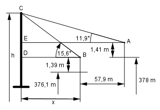

Aufgabe 205 Eine Kirchturmspitze C wird von 2 Punkten A und B aus angepeilt.A und B liegen in einer Vertikal- ebene mit C und sind 57,9 m voneinander entfernt. A liegt auf einer Höhe von 378 m, B auf 376,1 m. Die Instrumentenhöhe zur Peilung beträgt in A 1,41 m, in B 1,39 m. Die Spitze wird von A aus unter 11,9°, von B aus unter 15,6° angepeilt. Auf welcher Höhe h liegt die Turmspitze?

Im Dreieck CDB: (rechter Winkel bei D) h – 376,1 m – 1,39 m tan 15,8° = ----------------------- |*x x x * tan 15,8° = h – 377,49 m |+377,49 m h = x * tan 15,8° + 377,49 m Im Dreieck EAC: (rechter Winkel bei E) h – 378 m – 1,41 m tan 11,9° = --------------------- |*(x + 57,9 m) x + 57,9 m (x + 57,9 m)*tan 11,9° = h – 379,41 m |+379,41 m h = (x + 57,9 m) * tan 11,9° + 379,41 m Gleichgesetzt: x * tan 15,8° + 377,49 m = = (x + 57,9 m) * tan 11,9° + 379,41 m x*tan 15,8° + 377,49 m = = x*tan11,9°+57,9m*tan11,9°+379,41m |-x*tan11,9° x*tan 15,8° - x*tan 11,9° + 377,49 m = = 57,9 m*tan 11,9° + 379,41 m |-377,49 m x * (tan 15,8° - tan 11,9°) = = 57,9m*tan11,9° + 1,92 m |:(tan 15,8°-tan 11,9°) 57,9 m * tan 11,9° + 1,92 m x = ------------------------------ = tan 15,8° - tan 11,9° 57,9 m * 0,2107 + 1,92 m = --------------------------- = 195,3 m 0,283 – 0,2107 Eingesetzt : h = x * tan 15,8° + 377,49 m = = 195,3 m * 0,283 + 377,49 m h = 432,8 m